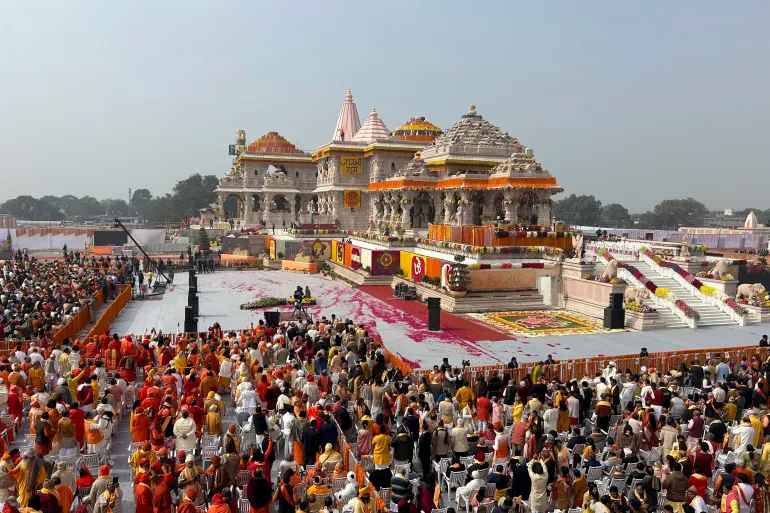

My Favorite Places
Ayodhya Rama Mandir

The origin of the Ayodhya Ram Mandir can be traced back to the ancient Hindu epic, Ramayana.
According to the epic, Ayodhya is the birthplace of Lord Rama.
Later, the Mughals constructed Babri Masjid mosque on the same site,
which is believed to be the site of the Ram Janmabhoomi, the birthplace of Rama.
The 2.7-acre main Ayodhya Ram temple complex will be home to the holy idol of Lord Rama.
On a raised platform Ayodhya Ram Mandir construction is being done and spans three levels.
The Ayodhya Ram Mandir is being built on the principles of Vastu Shastra and Shilpa Shastras,
an ancient Indian architectural science. The temple’s dimensions are impressive,
measuring 235 feet wide by 360 feet long by 161 feet high.
Ayodhya Ram Mandir will be the largest temple in India, as per its design structure.